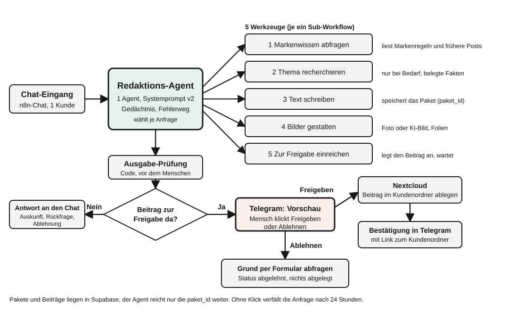
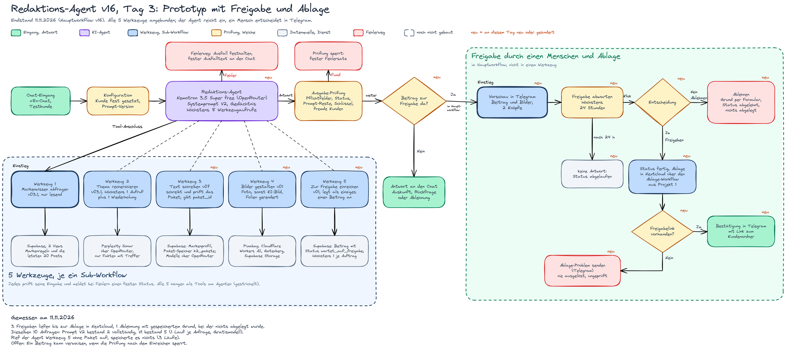
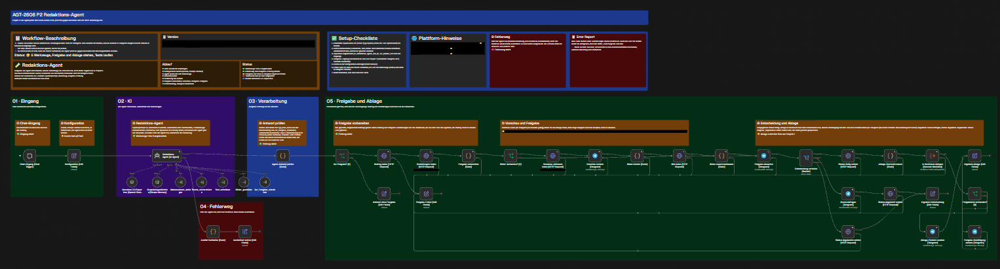
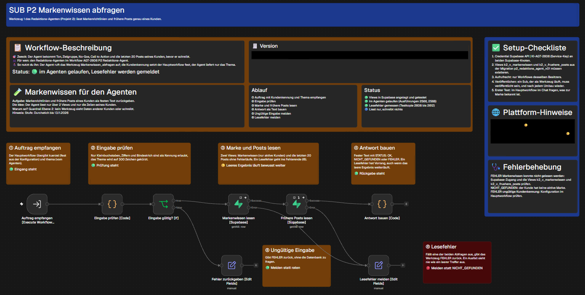
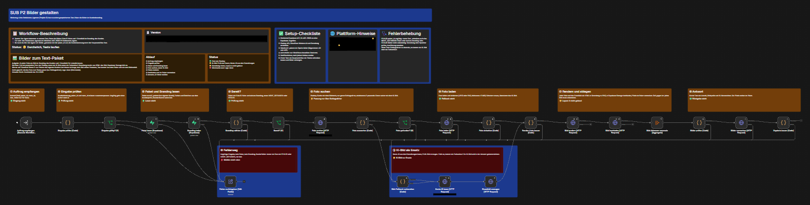
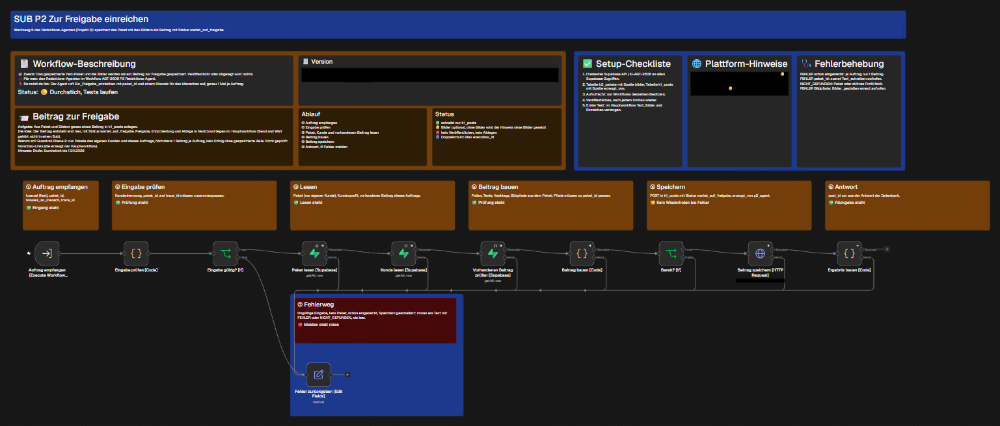

Use Case
Problem: Markengerechte Posts kosten kleine Firmen viel Zeit, und ein starrer Ablauf erkennt nicht, wann ein Thema gegen die Marke verstößt, schon gepostet wurde oder neue Fakten braucht.
Lösung: Ein Agent bekommt ein Thema, prüft es gegen Marke und frühere Posts, holt bei Bedarf belegte Fakten, lässt Text und Bilder bauen und legt das Paket einem Menschen zur Freigabe vor. Der Agent veröffentlicht nie selbst.
Rahmen: 1 Kunde je Auftrag, Testkunde mit erfundenen Daten, Eingang über den n8n-Chat. Nicht enthalten: automatisches Posten, echte Kundendaten, Kundenportal, mehrere Agenten.
Grundlage aus Projekt 1
Projekt 2 baut auf der Content-Maschine K1 auf, meinem Projekt 1. Von dort kommen die Datenbank mit den Tabellen k1_* (vor allem k1_kunden mit den Markenregeln und k1_posts mit den Beiträgen, die jetzt die Spalte erzeugt_von tragen) und der Ablage-Workflow, der freigegebene Beiträge in Nextcloud ablegt und hier nur aufgerufen wird. K1 läuft als feste Kette getrennt weiter; der Redaktions-Agent trifft die Entscheidungen, die dort feste Regeln waren.
Bedarf, Use Case und Grenzen der Content-Maschine stehen in Projekt 1:
- Planung Projekt 1 (Bedarf und Use Case)
- Architektur der Content-Maschine
- Lessons Learned aus Projekt 1 (Grenzen)
Verwandt, aber nicht Grundlage: der K1 Support-Agent aus den Wochen 6 und 7.
Architekturentscheidung
1 Agent mit 5 Werkzeugen, kein Multi-Agent. Die genutzten Schritte folgen einer festen Reihenfolge und teilen sich ein Ergebnis, das Paket. Nur an 1 Stelle wird gewählt: Recherche, Ablehnung, Rückfrage oder Einreichen. Ein weiterer Agent brächte zusätzliche Übergaben, die geprüft werden müssten, ohne dass ein Schritt eine eigene Rolle braucht. Der Agent trifft die Entscheidungen, die in Projekt 1 feste Regeln waren.
Warum ein Agent und keine feste Kette: Der Agent wählt je Anfrage, welche Werkzeuge nötig sind. Belegt: Mit Prompt V1 ließ er bei einem Auftrag ohne Bilder das Bild-Werkzeug weg (Lauf 2735) und rief bei einem Auftrag mit belegten Fakten die Recherche (Lauf 2747); mit V2 blieb eine Frage zur Marke beim Markenwissen (Lauf 2706), und ein Festpreisversprechen wurde abgelehnt, ohne dass Text oder Bilder entstanden (Lauf 2709). Die Wahl ist nicht immer richtig (Abschnitt Ergebnis). Kein Werkzeug enthält einen eigenen Agenten; das Text-Werkzeug nutzt bei Ausfall des Hauptmodells eine einfache Sprachmodell-Kette.
Verworfen: Projekt 1 umbauen (es läuft getrennt weiter), Freigabe in einem Werkzeug (Warten auf einen Menschen gehört in den Hauptworkflow), Multi-Agent. Neu bewertet wird nach der nächsten Prompt-Runde mit derselben Testreihe.


paket_id weiter. Klick vergrößert.Ziele, Scope, Architekturentscheidung und Risiken ausführlich in der Projekt-Charter (auch als Markdown).
Aktueller Plan
Je Kurstag gibt es einen Plan auf dem Endstand des Tages. Der neueste steht hier, die älteren auf den Tagesseiten.


Stand je Werkzeug
| Workflow | Stand | Aufgabe | Export | Tag |
|---|---|---|---|---|
| Hauptworkflow Redaktions-Agent | v16.2, nicht veröffentlicht | Chat, Agent, Ausgabe-Prüfung, Freigabe in Telegram, Ablage, Bestätigung | redaktions-agent.json | 1, 2, 3 |
| Werkzeug 1 Markenwissen abfragen | v03.3 | liest Markenregeln und frühere Posts über 2 Views, nur lesend | sub-markenwissen-abfragen.json | 1, 2 |
| Werkzeug 2 Thema recherchieren | v03.2 | belegte Fakten mit Quelle, höchstens 1 Aufruf plus 1 Wiederholung | sub-thema-recherchieren.json | 1, 2 |
| Werkzeug 3 Text schreiben | v07.1 | schreibt und prüft das Paket, speichert es unter einer paket_id | sub-text-schreiben.json | 2, 3 |
| Werkzeug 4 Bilder gestalten | v01.2 | Foto oder KI-Bild, Folien gerendert, abgelegt in Storage | sub-bilder-gestalten.json | 3 |
| Werkzeug 5 Zur Freigabe einreichen | v01.2 | legt als einziges Werkzeug einen Beitrag an, Status wartet_auf_freigabe | sub-zur-freigabe-einreichen.json | 3 |








Der Git-Tag trägt die Version des Hauptworkflows; die Versionen der Werkzeuge zählen eigen und stehen mit Uhrzeit in versionen.md. Agent-Modell seit 11.11.2026: Nemotron 3.5 Super free über OpenRouter.
Prompt-Versionen
| Version | Datum | Status | Änderung und Ergebnis | Datei |
|---|---|---|---|---|
| V2 | 10.11.2026 | live | Schritt für fehlende Werkzeuge, genauere Beschreibung des Text-Werkzeugs, Zahlen nur mit Quelle; im Vergleich 2 von 10 vollständig bestanden | Prompt, Konfiguration |
| V3 | 10.11.2026 | verworfen (live bleibt V2) | 1 Satz mehr zu fehlenden Werkzeugen; in 4 von 4 Läufen ohne Wirkung, zurückgebaut | Prompt, Konfiguration |
| V1 | 09.11.2026 | archiviert, Baseline | erste Fassung in 6 Bausteinen; im Vergleich 5 von 10 vollständig bestanden | Prompt, Konfiguration |
Je Version Datum, Beschreibung, Ergebnis und nächste Idee im CHANGELOG.
Ergebnis V1 gegen V2
Dieselben 10 Anfragen, 1 Lauf je Anfrage, Gratismodell. Das zeigt eine Richtung, keinen belastbaren Unterschied.
| Prompt | bestanden | teilweise | nicht bestanden |
|---|---|---|---|
| V2 | 2 (Anfrage 1, 5) | 5 (3, 4, 6, 8, 9) | 3 (2, 7, 10) |
| V1 | 5 (1, 2, 3, 6, 8) | 3 (4, 5, 10) | 2 (7, 9) |
V1 war bei Anfrage 2, 3, 6, 8 und 10 besser, V2 bei Anfrage 5 und 9. Schwächen von V2: Bilder trotz „keine Bilder“, Off-Topic-Aufträge werden bearbeitet, für reine Auskünfte fehlt ein Statuswert. Beide gaben weder den Systemprompt noch Daten eines anderen Kunden preis. Einzelheiten je Anfrage in der Tages-Doku Tag 3 und in der Test-Tabelle.
Freigabe und Ablage
Der Agent reicht ein, ein Mensch entscheidet. Die Vorschau kommt in Telegram mit 2 Knöpfen. Freigeben setzt den Status fertig, legt den Beitrag mit Bildern in Nextcloud ab und schickt seit v15 eine Bestätigung mit Link zum Kundenordner. Ablehnen fragt den Grund über ein Formular ab und speichert ihn beim Beitrag, abgelegt wird nichts. Ohne Antwort verfällt die Anfrage nach 24 Stunden. Belegt sind 3 Freigaben (Läufe 2768, 2782, 2748) und 1 Ablehnung (Lauf 2735).
Guardrails auf 3 Ebenen: Systemprompt (Rolle und wichtigstes Verbot vorn, keine erfundenen Fakten, kein Rollenwechsel, höchstens 8 Werkzeugaufrufe), Werkzeug (Eingaben geprüft, feste Kundenkennung, nur Werkzeug 5 legt einen Beitrag an), Ausgabe (Pflichtfelder, erlaubte Status, Prompt-Reste, Schlüssel, fremde Kundennamen; ohne Beitrags-ID kein Erfolg).
Zusatzfunktionen
Zusatzfunktionen über die Grundanforderungen hinaus. Stand 11.11.2026. Die Läufe sind Ausführungsnummern in n8n und stehen in der Test-Tabelle.
| Zusatzfunktion | Stand | Beleg |
|---|---|---|
| Human in the Loop | umgesetzt | Der Agent veröffentlicht nie selbst. Der Beitrag geht als Vorschau mit 2 Knöpfen nach Telegram: Freigeben oder Ablehnen mit Grund (Eingabe über ein Formular). Die Ablage in Nextcloud passiert erst nach der Freigabe. Getestet: 3 Freigaben mit Ablage (Läufe 2768 und 2782 mit Prompt V2, Lauf 2748 mit Prompt V1) und 1 Ablehnung (Lauf 2735: Status abgelehnt, Grund gespeichert, nichts abgelegt), siehe Test-Tabelle Abschnitt D und Tag 3. Nicht getestet: das Verfallen der Anfrage nach 24 Stunden ohne Klick. |
| Monitoring und Alerting | Ansatz, kein Überwachungssystem | Der Fehlerweg am Agenten setzt bei einem Ausfall einen festen Text, die Ursache steht als Code im Lauf (Läufe 2576 und 2579, Tag 2). Die Ausgabe-Prüfung sperrt unzulässige Antworten, etwa einen Statuswert ohne Beitrags-ID (Lauf 2706) oder ungültiges JSON (Lauf 2708); sie schlug auch fälschlich an (Lauf 2719, Wort „Systemprompt“). Im Hauptworkflow ist ein Fehler-Workflow eingetragen (Platzhalter ERROR_WORKFLOW_ID); ein Lauf, der ihn ausgelöst hat, ist nicht belegt. Es gibt kein Dashboard, keine Auswertung von Laufzeit oder Kosten und keinen getesteten Alarm an einen Menschen bei Fehlern. Der Zweig „Ablage-Problem senden“ wurde nie ausgelöst. |
| Multi-Agent | nicht umgesetzt | 1 Agent mit 5 Werkzeugen, begründet im Abschnitt Architekturentscheidung und in der Projekt-Charter. |
| MCP-Integration | nicht umgesetzt | Die Werkzeuge sind n8n-Sub-Workflows, kein MCP-Server; in der Projekt-Charter ausdrücklich nicht im Umfang. |
| Eigenes Interface | nicht umgesetzt | Eingang ist der n8n-Chat, die Freigabe läuft über Telegram. |
| Kosten-Kalkulation | nicht umgesetzt | Kosten je Lauf, Tag und Monat sind nicht ausgewertet (siehe Offene Punkte). |
| LLM-as-Judge | nicht umgesetzt | Im Workflow bewertet kein Sprachmodell die Antworten. Die Ausgabe-Prüfung ist regelbasiert, die Urteile der Test-Tabelle sind nach der Erwartung je Fall von Hand eingetragen. Geplant als Werkzeug 6 (siehe Projekt-Charter, Abschnitt 3). |
Compliance kurz
- Einstufung nach EU AI Act: begrenztes Risiko (Transparenz), weder verboten noch Hochrisiko. Bei einer Zweckänderung wie automatischem Posten wird neu bewertet.
- Rolle: beim Einsatz für Kunden Betreiber und voraussichtlich Anbieter; rechtlich offen, ob schon der Prototyp unter die Pflichten nach Art. 50 fällt.
- Maßnahmen: Freigabe durch einen Menschen vor jeder Ablage, Guardrails auf 3 Ebenen, Testdaten ohne Personenbezug; KI-Kennzeichnung der Posts geplant.
- Datenschutz: Testbetrieb mit erfundenen Daten, 2 benannte Ausnahmen (Telegram-Kennung der freigebenden Person, mögliche Namen realer Personen in öffentlichen Webtexten), deren Prüfung offen ist.
Ersteinschätzung, keine Rechtsberatung. Ausführlich in der Projekt-Charter, Abschnitt 6.
Offene Punkte
- Prompt V4 aus den Funden bauen und mit denselben 10 Anfragen messen.
- Werkzeug 6 „Qualität prüfen“: zuerst die Ursache des Rückfalls in alte Muster prüfen, dann bauen, bis Fr 20.11.2026 (siehe Projekt-Charter).
- Die große Testreihe mit normalen und adversarialen Fällen, je Fall mit erwarteten und verbotenen Werkzeugen, steht aus (geplant für den 12.11.2026, siehe Projekt-Charter, Zeitplan).
- KI-Kennzeichnung der Posts (rechtlich die dringendste Lücke).
- Vorverarbeitung des freien Chat-Textes vor dem Agenten (Namen entfernen), nicht gebaut.
- Verwaiste Beiträge, wenn die Ausgabe-Prüfung nach dem Einreichen sperrt; Fehlalarm beim Wort „Systemprompt“.
- Zweig „Ablage-Problem senden“ nie ausgelöst; nur der n8n-Chat als Eingang getestet; Kosten je Lauf, Tag und Monat noch nicht ausgewertet.
Repository und Release
Quelltext, Exporte, Prompts und Tests: github.com/MinkeAutomation/redaktions-agent. Stand der Wochenabgabe: Release W08 Abgabe, Tag v16. Ein Release bleibt unverändert; Ergänzungen danach stehen als neuer Eintrag im CHANGELOG.
Importhinweise und Platzhalter stehen im README.